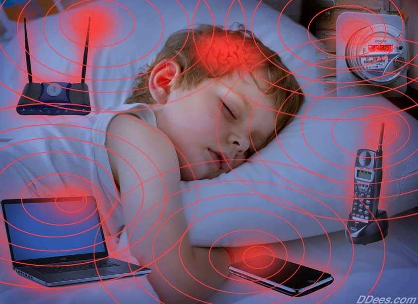

The biggest benefit of installing a 5G tower near the school is for the school not for the students. As the school has not much money they give their land to telecom companies in exchange for some profits. People may say that radio frequency, RF, might affect human health and that is true if a human is exposed to RF for a long time they have a high chance of getting some type of malignant tumor. However, this is only when a human is directly exposed and for a long time. A normal 5G tower is 200 feet tall, no one is going to be 200 tall so it is ok to have a 5G tower near a school.
Radio waves travel millions of bits of data per second and in one second they can travel up to 299,792,458 meters. With this fast interaction with the internet servers teachers and students increase their productivity.
Although there are fewer disadvantages of a 5G tower than advantages, they still have some. For instance, students could exploit the fast internet to do something else than school work such as playing games or watching videos. Even though algorithms for blocking unnecessary video and websites for school are developing, technology for exploiting is developing as well. Another problem is health issues. The possibility of getting cancer is very low but that does not mean that it's going to be 100% safe. Some people could get cancer or other health issues like headaches and memory loss because of the non-ionized high radio waves. Finally, it looks very bad.
